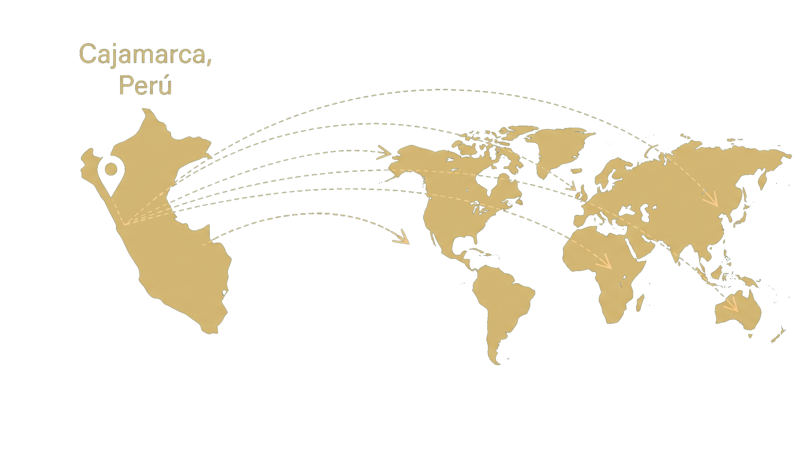

Sirope de yacón 250 gramos
Jarabe con dulzor natural proveniente de una raíz andina.
Ver productoLos mejores alimentos en tu día.
El yacón es una raíz andina reconocida por su sabor naturalmente dulce. Nuestros productos conservan sus propiedades y calidad para que lleguen a más personas.
Jarabe con dulzor natural proveniente de una raíz andina.
Ver producto
Jarabe ideal para hogares y un mayor consumo.
Ver producto
Una presentación versátil para...
Ver productoDesde nuestra tierra, Cajamarca, Perú, trabajamos para llevar productos andinos de alta calidad a clientes y socios comerciales en todo el mundo.

Golden Root nace con la idea de transformar el valor de los productos andinos en propuestas modernas y accesibles. Trabajamos con el yacón, una raíz con identidad, tradición y grandes posibilidades de transformación.
Cultivado en los Andes peruanos.
Ideal para diversas preparaciones.
En bebidas, postres y más.
Llevamos nuestra riqueza andina al mundo.
 UNA PLANTA DE LOS ANDES
UNA PLANTA DE LOS ANDES
Se eligen raíces frescas y en buen estado, descartando las dañadas o deterioradas para contar con una materia prima adecuada.
Las raíces se lavan para retirar tierra e impurezas, se pelan y se cortan para preparar la extracción del jugo o la deshidratación.
Para el jarabe, se extrae el jugo y se concentra con calentamiento controlado. Para la harina, las raíces se deshidratan y se muelen.
Los productos se colocan en envases limpios y herméticos, se identifican con sus etiquetas y se almacenan en condiciones adecuadas.

Buscamos cuidar cada etapa de la propuesta, desde la selección de la materia prima hasta el envasado, para ofrecer productos consistentes y de calidad.
Una invitación a explorar distintas formas de incluir el jarabe o la harina en tu mesa, siguiendo las indicaciones que acompañen al producto.
 RECETA 01
RECETA 01
Elaborado con jarabe de yacón, leche evaporada, huevos y vainilla. El jarabe endulza la mezcla y sirve para preparar la cobertura.
 RECETA 02
RECETA 02
Preparado con harina de yacón, chocolate, huevos y mantequilla. La harina sustituye parcialmente la harina tradicional.
 RECETA 03
RECETA 03
Elaborada con raíz fresca de yacón, agua, limón y jarabe de yacón. La raíz es el ingrediente principal y el jarabe se usa para endulzar.
¿Tienes comentarios sobre nuestro producto? Déjanos un mensaje.